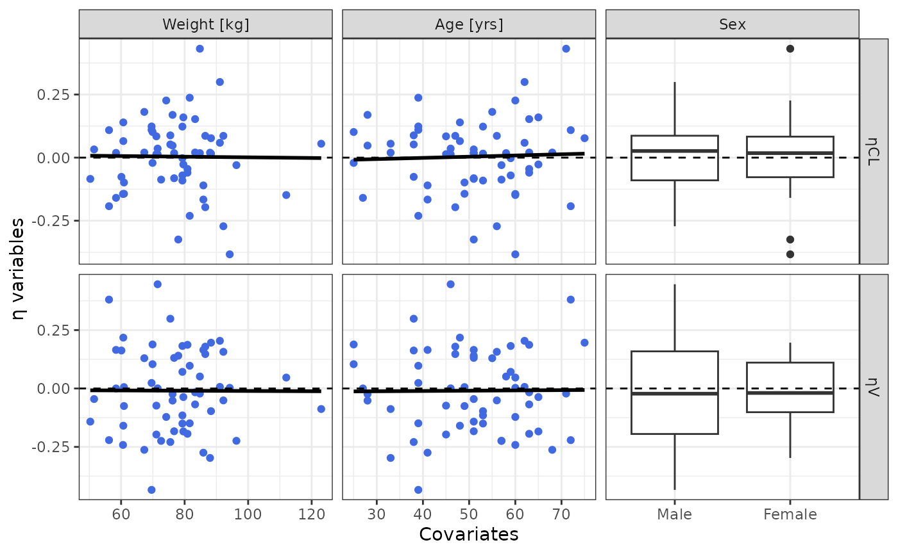

Covariate Analysis
covariate-analysis.Rmd
library(nonmem.utils)Preamble
Covariate analysis in PopPK modeling is a critical step used to identify and quantify factors that explain variability in PK parameters across individuals in a population.
To perform such analysis, Nonmem result file (e.g. .tab
or .par file) must include ETA
variable(s).
Such variables are defined in the meta data dictionary as
Type: eta as illustrated below:
| Name | Type | Label | Unit |
|---|---|---|---|
| ETA1 | eta | ηCL | |
| ETA2 | eta | ηV |
Interactive analysis
To analyse interactively Nonmem results you can use the shiny app below:
nonmem.utils::run_shiny("covariate-analysis")Quarto Report
To create a docx report of the covariate analysis you can use the quarto based function below:
nonmem.utils::report_covariate_analysis(
data_path = "my/dataset.tab",
meta_data_path = "my/dictionary.csv"
)Available analyses
Etas distribution and correlation
To analyze etas distributions and potential correlations, the
function eta_plot() can be used.
eta_plot(data_501, meta_data_501)
#> $All
#>
#> $SEXCovariates vs etas
To analyze potential correlations between etas and covariates, 2
functions can be used: eta_cov_plot() and
eta_cor().
The function eta_cov_plot() allows graphical analyses of
the covariate distribution and correlation:
eta_cov_plot(data_501, meta_data_501)
#> $All
#>
#> $SEXThe function eta_cor() provides a table with
- Spearman correlation test results between continuous covariates and etas
- ANOVA test results between categorical covariates and etas
eta_table <- eta_cor(data_501, meta_data_501)
eta_table |>
highlight_significant() |>
knitr::kable()| Covariates | ηCL | ηV |
|---|---|---|
| Weight | -0.035 (p: 0.793) | 0.045 (p: 0.733) |
| Age | 0.004 (p: 0.974) | -0.015 (p: 0.908) |
| Sex | Male: 0.00 (p: 0.885) Female: 0.00 (p: 0.986) |
Male: -0.01 (p: 0.763) Female: 0.00 (p: 0.990) |